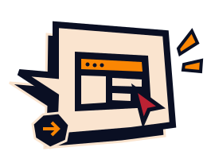
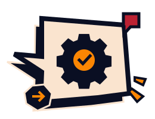

Sua marca precisa se comunicar com mais clareza
Você publica, mas sua comunicação ainda não deixa claro por que alguém deveria escolher seu negócio.
Unimos marketing, comunicação e tecnologia para aproximar sua marca das pessoas e facilitar o dia a dia do seu negócio. Das redes sociais ao site e às soluções personalizadas, cada projeto parte do que você precisa melhorar.
Seu negócio pode precisar de uma comunicação mais clara, de um site que apresente bem seus serviços ou de uma solução que reduza tarefas repetitivas. Para escolher por onde começar, a gente olha primeiro para o que está dificultando a sua rotina e a experiência dos seus clientes.
Você publica, mas sua comunicação ainda não deixa claro por que alguém deveria escolher seu negócio.
Ele procura informações, compara opções e não encontra um caminho simples para entrar em contato.
Informações espalhadas e processos repetitivos tornam o trabalho mais complicado do que precisa ser.
A gente combina estratégia, criatividade e tecnologia para ajudar sua marca a atrair pessoas, transformar interesse em contato e simplificar a rotina.
Social Media
Planejamento e criação de conteúdo para transformar suas redes sociais em um canal de comunicação mais claro, consistente e próximo do público.
Explorar Social Media
ConverterCriação de Sites
Sites e landing pages que organizam informações, valorizam seus serviços e facilitam o caminho entre o interesse e o contato.
Explorar Criação de Sites
SimplificarSoluções Personalizadas
Ferramentas digitais desenvolvidas conforme os processos do seu negócio, para organizar informações, conectar etapas e simplificar tarefas.
Explorar Soluções PersonalizadasAs redes sociais despertam o interesse de quem ainda não conhece sua marca, enquanto o site apresenta seus serviços e facilita o contato. A tecnologia pode dar continuidade a essa experiência, organizando as informações e as tarefas que vêm depois.
Seu negócio pode precisar de uma solução específica ou da combinação entre elas. Quando existe essa conexão, fica mais fácil manter uma comunicação consistente ao longo de toda a experiência.
Este é um exemplo de como os serviços podem se conectar; o caminho é definido a partir das necessidades do seu negócio.
Cada projeto começa com uma conversa sobre o que precisa melhorar e segue por etapas que ajudam a transformar essa necessidade em uma solução.
Conversamos sobre o negócio, o cenário atual e o que precisa melhorar.
Definimos prioridades, entregas e um caminho viável para o projeto.
Transformamos a estratégia em conteúdo, experiência digital ou ferramenta funcional.
Validamos o que foi desenvolvido, corrigimos problemas e identificamos melhorias conforme o escopo contratado.
Estes exemplos ilustram como podemos ajudar seu negócio e não representam projetos já realizados.
Organizar os assuntos que sua marca precisa comunicar nas redes sociais.
Reunir serviços e informações em uma página fácil de navegar.
Concentrar informações que hoje estão espalhadas em planilhas.
Você entende o que está sendo desenvolvido, por que isso importa e quais são as próximas etapas.
O visual chama atenção, mas cada escolha precisa ajudar sua marca a comunicar alguma coisa.
A ferramenta certa é aquela que facilita seu trabalho, não a que adiciona mais etapas à rotina.
Você pode contratar uma solução específica ou combinar serviços, conforme a necessidade do seu negócio. A conversa inicial ajuda a entender por onde vale a pena começar.
Sim, avaliamos projetos em diferentes fases. O importante é entender o objetivo e construir uma proposta compatível com a necessidade.
O orçamento parte de uma conversa sobre o que você precisa, para que possamos definir o escopo, as entregas e as condições de uma proposta.
Sim, os projetos de sites e soluções digitais são definidos a partir das necessidades e possibilidades de cada negócio.
Podemos avaliar o que você já tem para entender o que vale manter, ajustar ou reconstruir antes de propor um caminho.
Conte o que está acontecendo no seu negócio para a gente entender, juntos, qual caminho faz sentido.
Quero conversar sobre meu projeto